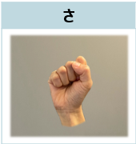
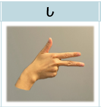
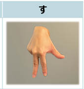
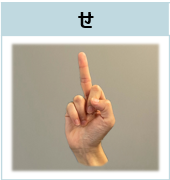
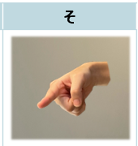

さ
「さ」の指文字
ジャンケンのグーの形で、これはアルファベットの｢S｣の指文字と同じです。

し
「し」の指文字
手の甲を相手側に向けて親指、人差し指、中指の3本を伸ばし、親指だけ上向き、人差し指と中指は横向きにします。これは数字の「7」の指文字と同じです。

す
「す」の指文字
指先が下向きになるように手の甲を相手側に向け、親指は横に伸ばし薬指と小指は曲げます。これはカタカナの「ス」の形が由来になっています。

せ
「せ」の指文字
ジャンケンのグーの形で中指だけ伸ばし、中指の腹を相手に向けます。「背（せ）筋」がピンと伸びている様子を表現します。

そ
「そ」の指文字
「それ！」と指さすように人差し指を伸ばし、斜め下に向けます。